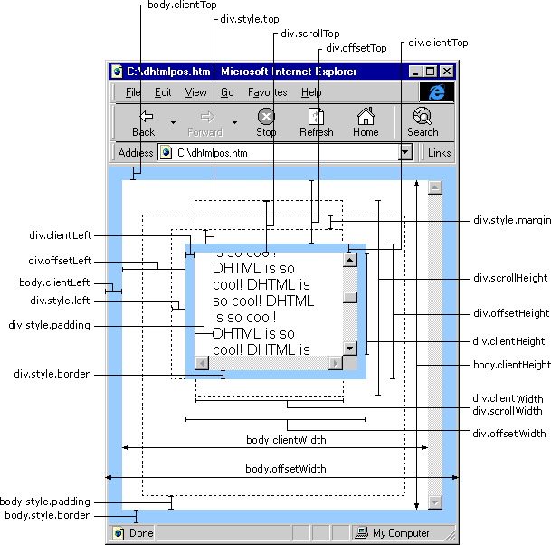
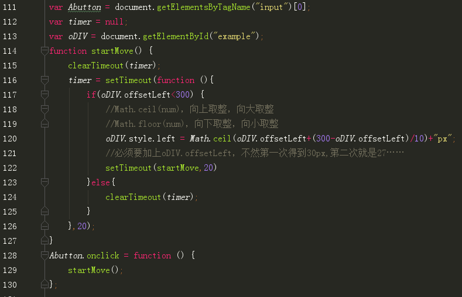

1.匀速运动
遇到困难：
- 速度取某些值时无法停止
- 重复点击速度加快
- 问题2引发的问题，使用clearTimeOut后，某种写法会导致清除之前的定时器后，直接不执行后续代码
解决方法
- 把if语句中==300px，改为<300px。（缺点：可能会超过300px一点点，之后会再发掘更好的方法）
PS：改成<=300的话，正好到达300的情况下会多走一次
- 在执行函数前，先使用clearTimeOut把之前的超时调用取消掉，保证每次只有一个定时器运行
- 还没发现原因是什么，但是找到了应对方法
js代码
放在位置1没问题，放在位置2点击第二次时DIV块直接停止，并且再点也不会有反应

目前并不知道原因是什么。。只能按照位置1的写了。。。
经过多天的研究！！！有答案了！戳下面的链接！
使用setTimeout模拟setInterval时，用clearTimeout遇到的坑们1.缓冲运动（变速运动）
遇到困难：
- style.left和offsetLeft的区别
- Math.ceil无效
- 缓冲运动到最后减速阶段停止不动。
解决方法
- offsetLeft 获取的是相对于父对象的左边距
left 获取或设置相对于 具有定位属性(position定义为relative)的父对象 的左边距
如果父div的position定义为relative,子div的position定义为absolute，那么子div的style.left的值是相对于父div的值，
这同offsetLeft是相同的，区别在于：
· style.left 返回的是字符串，如28px，offsetLeft返回的是数值28，如果需要对取得的值进行计算， 还用offsetLeft比较方便。
· style.left是读写的，offsetLeft是只读的，所以要改变div的位置，只能修改style.left。
· style.left的值需要事先定义，否则取到的值为空。而且必须要定义在html里，我做过试验，如果定义在 css里，style.left的值仍然 为空，这就是我刚开始碰到的问题，总是取不到style.left的值。
offsetLeft则仍然能够取到，无需事先定义div的位置。
 - Math.ceil括号中只能放数字，不可以把+"px"一起包进去
- 最后阶段前进像素点小于1，需要用Math.ceil或者Math.floor向上或者向下取整
js代码
